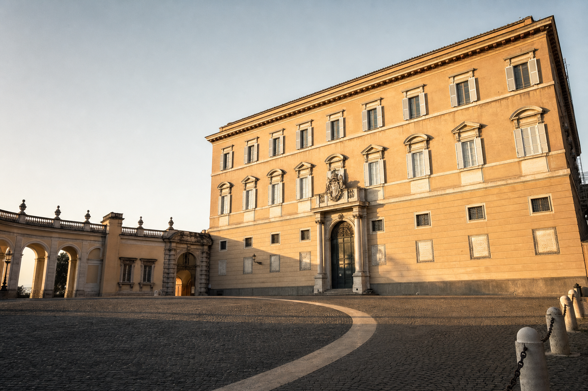
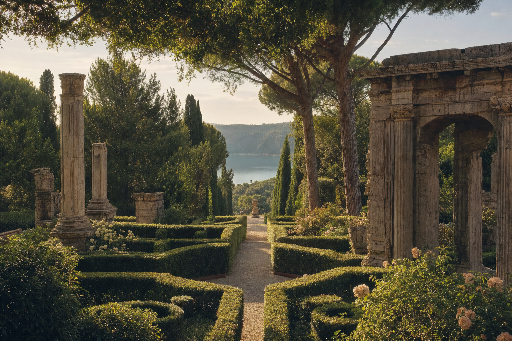

Le Ville Pontificie — quattrocento anni di villeggiatura papale.
Il 10 maggio 1626 papa Urbano VIII varcò per la prima volta la soglia del Palazzo di Castel Gandolfo. Il 5 luglio 2026, esattamente quattro secoli dopo, Papa Leone XIV vi è tornato ad abitare. Storia di un luogo che ha visto passare i grandi passaggi della Chiesa moderna.

L'origine — Il feudo dei Gandolfi
Il nome del borgo deriva dai Gandolfi, famiglia genovese che nel XII secolo possedeva il castello sulla rupe. Nel 1596 la Camera Apostolica acquisì il territorio per debiti dei Savelli, e Castel Gandolfo divenne villa pontificia — un domicilio privato del Papa, sottratto alla giurisdizione dei signori laici ([Wikipedia — Ville Pontificie](https://it.wikipedia.org/wiki/Ville_pontificie_di_Castel_Gandolfo)). Nel 1626 Urbano VIII, papa Barberini, decise di costruirvi una residenza per la villeggiatura estiva. Fu il primo vero atto di quella storia lunga quattro secoli.
Il Seicento — Il Palazzo di Maderno e la piazza del Bernini
Il Palazzo Apostolico fu progettato da Carlo Maderno con la collaborazione di Domenico Castelli. Facciata austera, cortile centrale, ali laterali per la corte pontificia. Nel 1660 Alessandro VII Chigi commissionò a Gian Lorenzo Bernini la Collegiata di San Tommaso da Villanova, che chiude Piazza della Libertà: cupola con otto tondi in stucco raffiguranti la vita del santo e i Quattro Evangelisti nei pennacchi, pala dell'altare maggiore dipinta da Pietro da Cortona ([Wikipedia — Collegiata](https://it.wikipedia.org/wiki/Collegiata_di_San_Tommaso_da_Villanova)). La piazza berniniana fu completata nel 1661.
Le Ville — Barberini, Cybo e i Giardini
Nel 1657 la Camera Apostolica acquisì Villa Barberini, cinquantacinque ettari extraterritoriali che comprendono i resti della villa dell'imperatore Domiziano. Nel 1773 Clemente XIV comprò Villa Cybo, tre ettari con giardino annesso; nel 1959 nel suo parco fu inaugurata l'Aula delle Udienze estive ([Wikipedia — Ville Pontificie](https://it.wikipedia.org/wiki/Ville_pontificie_di_Castel_Gandolfo)). L'insieme delle tre Ville forma oggi il complesso extraterritoriale delle Ville Pontificie, sotto la sovranità della Santa Sede in base ai Patti Lateranensi del 1929.
Il Novecento — Rifugio in guerra, apertura al pubblico
Durante la Seconda Guerra Mondiale Pio XII aprì le Ville a oltre 12.000 rifugiati, molti dei quali ebrei salvati dalle deportazioni. Nelle sale del Palazzo Pontificio nacquero 40 bambini durante quel periodo, tutti battezzati come Pio o Eugenio, nomi del Papa ([Wikipedia — Castel Gandolfo](https://it.wikipedia.org/wiki/Castel_Gandolfo)). Nel 2016 papa Francesco decise di aprire il Palazzo Apostolico al pubblico come museo, con appartamenti pontifici, biblioteca, sala del trono e cappella visitabili ([Wikipedia — Ville Pontificie](https://it.wikipedia.org/wiki/Ville_pontificie_di_Castel_Gandolfo)).

Borgo Laudato Si' — l'ecologia integrale di Francesco.
Nel 2023 Francesco riorganizzò i 55 ettari extraterritoriali nel Borgo Laudato Si', percorso di ecologia integrale ispirato all'enciclica del 2015. Trentacinque ettari di giardini e venti agricoli e zootecnici, con serre, uliveti, vigneti e allevamenti a filiera corta. Il progetto è aperto al pubblico con orari stagionali ([laudatosi.va](https://www.laudatosi.va/visite-aperte-al-pubblico/)).
2026 — Il ritorno di Leone XIV
Il 5 luglio 2026 Papa Leone XIV ha varcato di nuovo la soglia del Palazzo Apostolico, riprendendo la tradizione della villeggiatura estiva che Francesco aveva sospeso ([Wikipedia — Ville Pontificie](https://it.wikipedia.org/wiki/Ville_pontificie_di_Castel_Gandolfo)). Nel mese di luglio ha recitato tre Angelus pubblici da Piazza della Libertà: il 12, il 19 e il 26 luglio 2026, alle ore 12 ([Comune di Castel Gandolfo](https://www.comune.castelgandolfo.rm.it/it/news/gli-angelus-di-papa-leone-xiv-a-castel-gandolfo)). Il quarto centenario coincide con la 90ª Sagra delle Pesche, che il borgo celebra dal 20 al 26 luglio. Un'estate storica per Castel Gandolfo, che torna a essere non solo un museo ma una residenza abitata.
Cosa vedere oggi
Il Palazzo Apostolico è aperto al pubblico dal 2016. Biglietto intero 11 euro, ridotto 5 euro, include l'audioguida. La visita richiede circa 90 minuti e conduce attraverso gli appartamenti pontifici arredati come vennero lasciati, la biblioteca privata, la sala del trono, la cappella e la loggia panoramica sul lago ([Musei Vaticani](https://www.museivaticani.va/content/dam/museivaticani/pdf/visita_musei/scegli_visita/ville/Visita_palazzo_apostolico.pdf)). Il combinato Palazzo + Giardini + Antiquarium costa 26 euro intero. Per la visita alla Specola Vaticana, con osservazione astronomica, occorre prenotare direttamente sul sito dei Musei Vaticani.
Vieni a visitarle.
Prenota il biglietto per il Palazzo Apostolico e organizza un giorno intero tra sale storiche e giardini pontifici. Come arrivare con il treno da Roma San Pietro in 40 minuti.